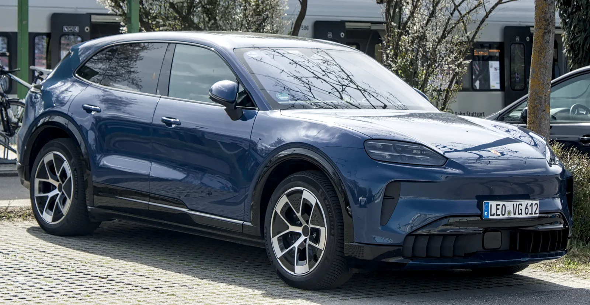
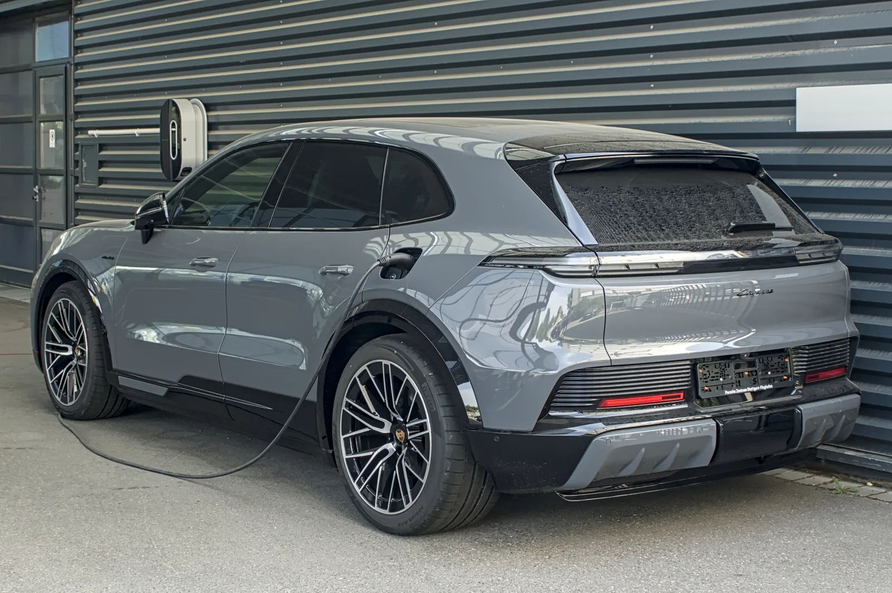
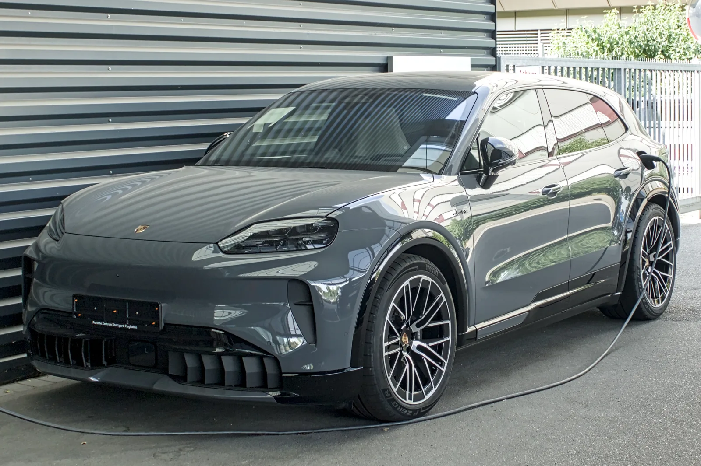

▲ 포르쉐 매장에 전시된 카이엔 일렉트릭 터보. 프론트 범퍼의 'electric' 레터링이 순수전기 모델임을 알린다
1. 반세기 만에 엔진을 내려놓은 카이엔
포르쉐가 3세대 카이엔의 완전변경과 함께 브랜드 최초의 순수전기 카이엔인 '카이엔 일렉트릭'을 공개했다. 2002년 출시 이후 20여 년간 V6·V8 가솔린 엔진과 플러그인 하이브리드로 라인업을 이어온 카이엔이 처음으로 내연기관 없는 모델을 갖추게 된 것이다. 카이엔 일렉트릭은 폭스바겐 그룹의 PPE(Premium Platform Electric) 플랫폼을 기반으로 개발됐으며, 기존 가솔린 카이엔과는 완전히 다른 전용 전기차 설계를 적용했다.
포르쉐코리아는 카이엔 일렉트릭과 카이엔 쿠페 일렉트릭을 2026년 하반기 국내에 출시한다는 계획이다. 이미 미국, 말레이시아 등 일부 해외 시장에서는 인도가 시작됐으며, 국내에는 세단형 SUV인 카이엔 일렉트릭에 이어 쿠페형 모델도 순차 투입될 예정이다.

▲ 카이엔 일렉트릭 기본형. 외관은 기존 가솔린 카이엔과 차별화된 매끈한 전면 디자인을 갖췄다 ⓒ Wikimedia Commons
2. 113kWh 배터리, 최대 642km 주행거리
카이엔 일렉트릭의 핵심은 113kWh(순수 용량 108kWh) 규모의 실리콘-그래파이트 음극 배터리다. WLTP 기준 카이엔 일렉트릭은 1회 충전으로 최대 642km를 달릴 수 있으며, 800V 고전압 아키텍처를 적용해 최대 390kW급 급속충전을 지원한다. 완속에서 급속까지 폭넓은 충전 인프라 대응이 가능하고, 10분 충전만으로 약 315km를 추가로 달릴 수 있는 수준이다.
| 트림 | 최고출력 | 0-100km/h | 최대 주행거리 |
|---|---|---|---|
| 카이엔 일렉트릭 | 408마력(런치 컨트롤 시 442마력) | 5초대 | 642km |
| 카이엔 터보 일렉트릭 | 최고 1,156마력(런치 컨트롤 시) | 2.5초 | 623km |
📍 참고로 알아두면 좋은 것
런치 컨트롤은 정지 상태에서 최대 출력을 순간적으로 끌어올려 최고 가속 성능을 내는 기능이다. 카이엔 터보 일렉트릭의 1,156마력은 이 기능을 사용했을 때의 순간 최대치이며, 상시 주행 출력은 이보다 낮다.
3. 카이엔 터보, 포르쉐 역사상 가장 강력한 양산차
카이엔 터보 일렉트릭은 정지 상태에서 시속 100km까지 단 2.5초 만에 도달한다. 이는 현행 911 터보 S와 맞먹는 가속력으로, SUV 차체로는 이례적인 수치다. 포르쉐는 이 모델을 두고 "역사상 가장 강력한 양산 포르쉐"라고 소개했는데, 순간 최대 1,156마력은 내연기관 시절 카이엔 라인업 어떤 모델도 넘보지 못했던 출력이다.
기본형 카이엔 일렉트릭 역시 408마력(런치 컨트롤 시 442마력)으로 기존 가솔린 카이엔 대비 부족함이 없는 성능을 갖췄다. 두 모델 모두 전륜과 후륜에 각각 모터를 배치한 듀얼모터 사륜구동 방식을 쓴다.

▲ 충전 중인 카이엔 일렉트릭 후측면. 리어 콤비네이션 램프가 가로로 이어지는 디자인이 적용됐다 ⓒ Wikimedia Commons
4. 국내 가격, 1억 4천만원대부터
국내 판매 가격은 부가세 포함 카이엔 일렉트릭 1억 4,230만원, 카이엔 터보 일렉트릭 1억 8,960만원부터로 책정됐다. 쿠페형인 카이엔 쿠페 일렉트릭은 1억 4,690만원, 카이엔 S 쿠페 일렉트릭은 1억 6,720만원, 카이엔 터보 쿠페 일렉트릭은 1억 9,100만원부터 시작한다.
| 모델 | 가격(원) |
|---|---|
| 카이엔 일렉트릭 | 1억 4,230만~ |
| 카이엔 터보 일렉트릭 | 1억 8,960만~ |
| 카이엔 쿠페 일렉트릭 | 1억 4,690만~ |
| 카이엔 S 쿠페 일렉트릭 | 1억 6,720만~ |
| 카이엔 터보 쿠페 일렉트릭 | 1억 9,100만~ |
기존 가솔린·플러그인하이브리드 카이엔과 병행 판매될 예정이며, 국내 출시 시점과 초도 물량, 세부 트림 구성은 포르쉐코리아의 공식 발표를 통해 확정될 전망이다. 관련 소식은 포르쉐코리아 공식 홈페이지에서도 확인할 수 있다. 바로가기
5. 경쟁 구도와 시장 전망
카이엔 일렉트릭은 아우디 Q8 e-트론, BMW iX, 메르세데스-벤츠 EQE SUV, 로터스 엘레트레 등 프리미엄 대형 전기 SUV들과 경쟁하게 된다. 특히 같은 폭스바겐 그룹 PPE 플랫폼을 공유하는 아우디 Q6 e-트론, 마칸 일렉트릭과도 기술적 연관성이 깊어, 그룹 내 800V 전동화 라인업의 최상위 지점을 차지하는 모델로 평가된다.
✅ 카이엔 일렉트릭, 이것만은 확인하세요
· 국내 출시는 2026년 하반기 예정, 정확한 월별 일정은 미공개
· 배터리 113kWh, WLTP 기준 최대 642km 주행
· 800V 아키텍처로 최대 390kW 급속충전 지원
· 카이엔 터보는 런치 컨트롤 시 최고 1,156마력
· 기존 가솔린·PHEV 카이엔과 국내 병행 판매

▲ 충전 케이블이 연결된 카이엔 일렉트릭. 프론트 범퍼 하단의 대형 에어커튼이 전기 SUV 특유의 공력 설계를 보여준다 ⓒ Wikimedia Commons
6. 정리
카이엔 일렉트릭은 포르쉐가 처음으로 내연기관을 배제하고 만든 카이엔이다. 113kWh 배터리와 800V 아키텍처로 실용성과 성능을 동시에 잡았고, 터보 모델은 순간 1,156마력이라는 포르쉐 양산차 역사상 최고 출력을 낸다. 국내 가격은 1억 4천만원대부터 시작하며, 올해 하반기 출시가 예고된 만큼 정식 발표와 세부 사양은 앞으로 순차적으로 공개될 것으로 보인다.